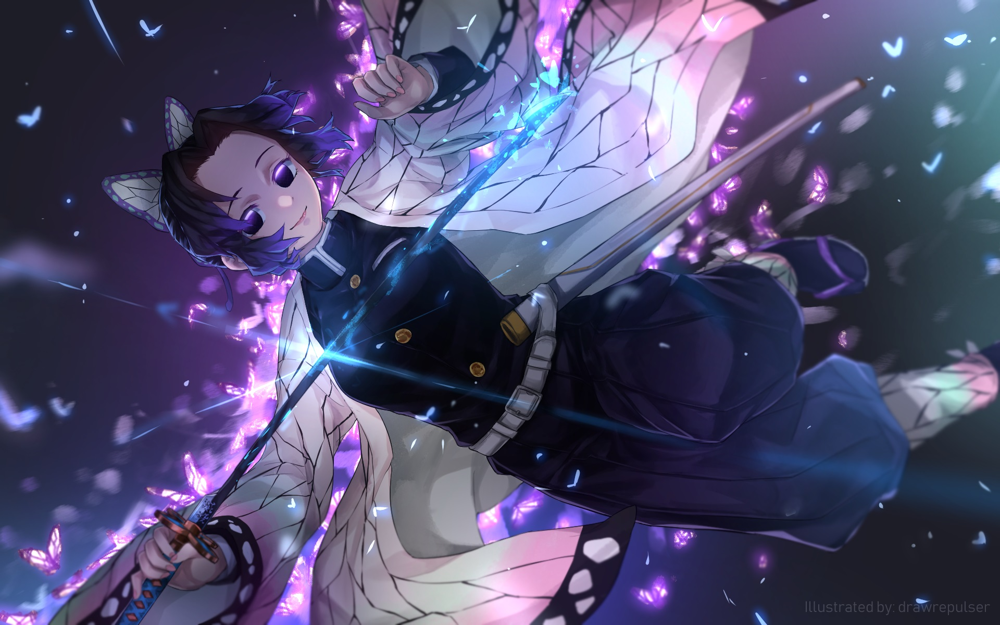
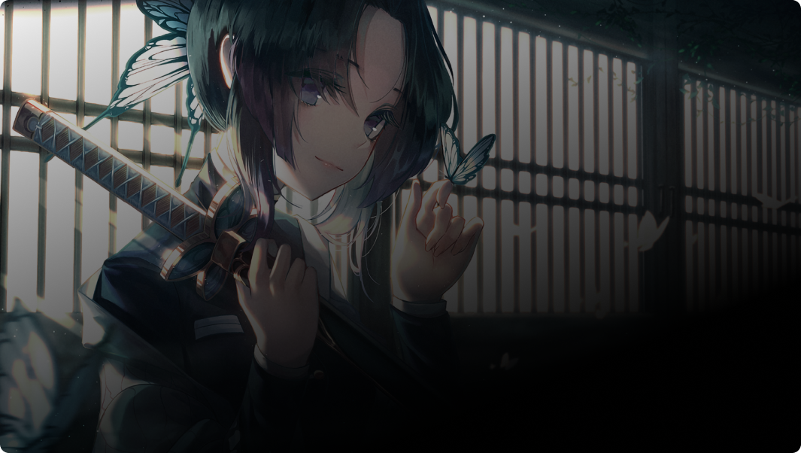

19:20, 17 февраля 2022
"Впервые попал домой за три дня" — создателей "Атаки титанов" снова стали обвинять в кранчах
Анимационная студия MAPPA стала одной из сильнейших команд в сегменте аниме, но за этим, похоже, скрывается не только талант и усердная работа, но серьезные переработки. Один из режиссеров и аниматоров "Атаки титанов" Тэруюки Оминэ написал...

19:20, 17 февраля 2022
Из Рик Ролла получился отличный аниме-опенинг
Любой пользователь интернета хоть раз, но оказывался жертвой так называемого Рик Ролла — когда при нажатии на ссылку или при переходе на интересующий контент, оказываешься на ютубе и смотришь клип Рика Эстли "Never Gonna Give...
 19:20, 17 февраля 2022
19:20, 17 февраля 2022
Красота зимнего спорта в анимационном ролике Honkai Impact 3rd
Компания miHoYo, известная по Genshin Impact, опубликовала анимированный ролик слэшера Honkai Impact 3rd. В видео героини игры, вопреки обыкновению, никого не разрубают, а развлекаются катанием на коньках, лыжах и сноубордах. Анимация посвящена воспоминаниям об уходящей...
